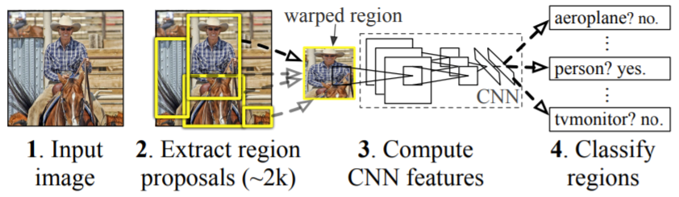
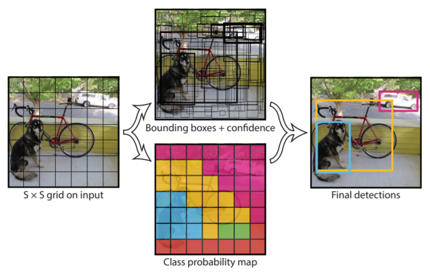

Object Detection for Autonomous Vehicles
Models
I fine tune two popular object detection models on the Berkeley DeepDrive object detection dataset, Faster R-CNN and YOLOv4, which are described in more detail below.
Faster R-CNN
Faster R-CNN, as the name suggests, is a faster version of R-CNN, another object detection model. As shown in the diagram below, from [4], R-CNN has two main parts: 1) select regions from the input image that may contain bounding boxes (the creators of R-CNN use selective search for the region proposal algorithm); and 2) resize these regions to be the same size and pass them to a CNN to compute features and classify each region [4]. This approach is where R-CNN gets its name: "Regions with CNN features" [4].

The next iteration of R-CNN was Fast R-CNN, which aims to make classifying region proposals more efficient [5].
Fast R-CNN passes an image and regions of interest to a CNN, producing a feature map of the image, then extracting
a feature vector from this feature map for each proposed region, and finally, these feature vectors are passed to
fully connected layers to compute the probability for each region and object class, that the region contains an
object from that class [5].
Faster R-CNN improves on Fast R-CNN by taking a different approach to region selection, in order to reduce the
bottleneck it creates [6]. To speed-up region selection, Faster R-CNN uses a Region Proposal Network (RPN), which
is a CNN that takes in an image and outputs rectangular region proposals, along with a score for each proposal,
indicating how likely it is that an object is in that region [6]. These region proposals are then passed to Fast
R-CNN's detection network, which shares convolutional features with the RPN [6].
YOLOv4
Unlike other object detection methods, YOLO (You Only Look Once) treats object detection as a regression problem rather than a classification problem and uses a single neural network to predict possible bounding boxes and the probability those boxes belong to each object class [7]. As shown in the diagram below, from [7], given an image, YOLO splits the image into a grid and for each cell, predicts a pre-defined number of bounding boxes as well as the confidence of those boxes and for each object class, the probability that an object from that class is in the bounding box [7]. Next, bounding boxes whose confidence falls below a certain threshold are removed [7]. Predicting the bounding boxes, confidence scores, and object class probabilities is all done in a single CNN [7]. Thus, the name YOLO comes from the fact that you only have to look at each image once in order to predict the bounding boxes and class probabilities.

Multiple improvements have been made to YOLO, starting with YOLOv2 or YOLO9000, which aims to make YOLO more
accurate while still maintaining its speed [8]. YOLOv2 achieves this by allowing the model to detect more
fine-grained features, adding batch normalization to the convolutional layers in YOLO’s CNN to improve
convergence, and increasing the size of the input images for the classifier portion of the CNN from 224x224
to 448x448 to match the size of images used during object detection [8]. However, after pre-training the
classifier, the input image size is varied after a few iterations to help the network better adapt to different
image sizes [8]. YOLOv2 also uses anchor boxes rather than fully connected layers to predict the bounding boxes
to make it easier for the CNN to learn [8]. More details on how anchor boxes are incorporated are in the original
paper [8].
YOLOv3 builds off YOLOv2, modifying the CNN used by YOLOv2, which combines ideas from the YOLOv2 network,
Darknet-19, and residual connections, creating a network with 53 convolutional layers and increasing accuracy
[9]. YOLOv4, which I use in my experiments, aims to make YOLO faster on GPU by modifying the YOLOv3 CNN, adding
spatial pyramid pooling and cross-stage-partial-connections [10].